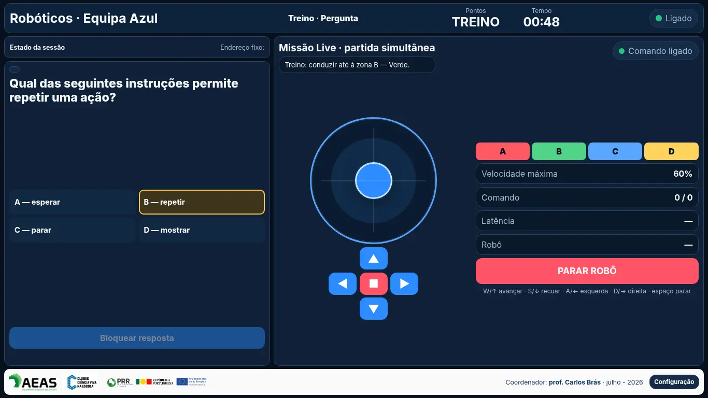
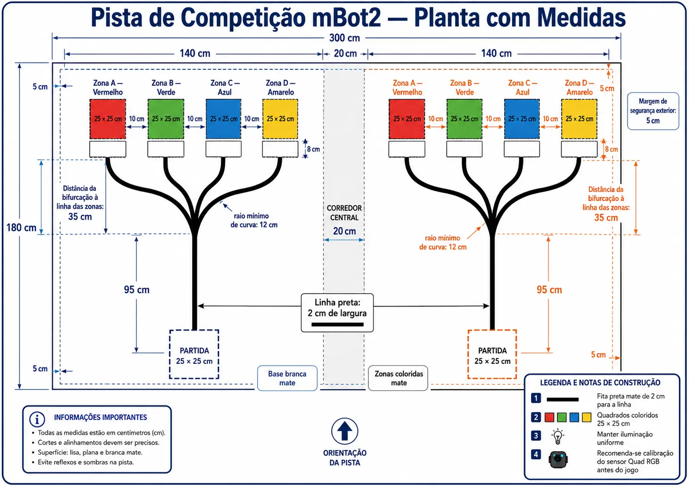

Questão comum
As equipas analisam a mesma pergunta, escolhem A, B, C ou D e bloqueiam a resposta.
Robótica · conhecimento · competição
Duas equipas enfrentam as mesmas perguntas e comandam dois mBot2 em simultâneo. A resposta escolhida transforma-se numa missão física: programar ou conduzir o robô até à zona certa, com precisão e rapidez.
Projeto acompanhado — disponibilização mediante contacto

Uma ronda em quatro momentos
O duelo liga a aprendizagem conceptual a uma ação concreta do robô. O sistema sincroniza as duas equipas, controla o tempo e calcula o resultado sem revelar antecipadamente a opção correta.
As equipas analisam a mesma pergunta, escolhem A, B, C ou D e bloqueiam a resposta.
Consoante o modo, constroem um algoritmo ou preparam o joystick e os controlos Live.
Depois da contagem decrescente, os dois robôs avançam para a zona colorida correspondente à escolha.
A pontuação combina resposta, chegada ao destino escolhido e rapidez da execução.
Uma resposta incorreta não termina a missão: a equipa ainda pode demonstrar controlo e chegar corretamente à zona que escolheu.
Três formas de jogar
O apresentador escolhe um modo para toda a partida ou combina estratégias ronda a ronda.
Depois de responder, cada equipa constrói e valida o algoritmo que irá comandar o robô. Os programas são executados simultaneamente.
Pensamento computacional · sequências · decisãoAs equipas conduzem os mBot2 com joystick virtual ou teclado. A velocidade máxima depende do nível da pergunta e é igual para ambas.
Controlo · coordenação · estratégiaCada uma das quatro rondas pode ser definida como Programação ou Live, criando uma competição diversificada e progressiva.
Adaptação · colaboração · desafioSistema completo de aprendizagem
Perguntas organizadas por disciplina, ano do 7.º ao 12.º, dificuldade e utilização em treino ou competição.
O Quad RGB confirma as zonas A–D e o ultrassónico ajuda a parar perante um obstáculo.
Luzes e sons identificam equipas, respostas, conquistas, avisos, empate e vitória final.
Resultados, missões, respostas, tempos e modos podem ser comparados por versão e num Top Global normalizado.
A audiência acompanha pergunta, tempo, estado das equipas, resultado e classificação sem interferir nos postos.
Robótica, programação e conteúdos curriculares encontram-se numa atividade cooperativa e competitiva.
A atividade em três perspetivas


Montagem prevista
O sistema funciona numa rede local própria e não necessita de Internet durante a atividade.
Segurança integrada
Demonstração, implementação ou colaboração
O software não é disponibilizado para download direto. Escolas, professores e entidades interessadas devem contactar o professor Carlos Brás, coordenador do Clube Ciência Viva Abel Salazar e responsável pela idealização e desenvolvimento da aplicação.